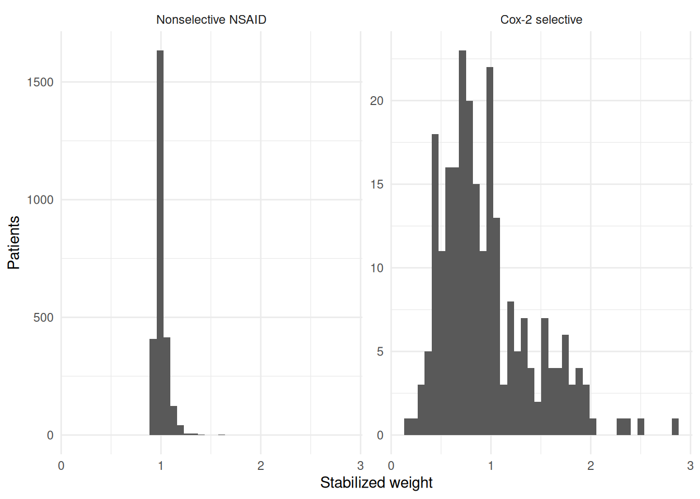

Chapter 9 Inverse probability of treatment weighting
Chapter 8 built a propensity score and used it in two ways, each of which discarded information: stratification coarsened the score into five bands, and matching dropped every nonselective initiator who failed to pair with a Cox-2 patient. This chapter puts the same fitted score to a third use that retains every patient. Although the earlier estimators worked by grouping people who resemble each other, here we leave the cohort intact and assign each patient a weight, larger for those who received the treatment their covariates made unlikely and smaller for those who received the expected one. In the reweighted cohort treatment and covariates are unrelated by construction, so a comparison of two weighted means estimates the causal contrast. This is inverse probability of treatment weighting, the last of Part II’s three estimators and the one that generalizes most readily, since it extends cleanly to treatments that change over time.
9.1 Reweighting to a pseudo-population
The intuition is easiest to see in a cohort small enough to work by hand. Suppose the only confounder is frailty, present in 400 of 1,000 patients. Frail patients are treated with probability 0.60 and non-frail patients with probability 0.15, and the true risk of the outcome is 20% in frail patients and 10% in non-frail patients regardless of treatment — so the treatment does nothing at all.
toy <- tibble(
frail = c( 1, 1, 0, 0),
arm = c( 1, 0, 1, 0),
n = c(240, 160, 90, 510),
cases = c( 48, 32, 9, 51)
) |>
mutate(
e = if_else(frail == 1, 0.60, 0.15),
wt = if_else(arm == 1, 1 / e, 1 / (1 - e)),
pseudo_n = n * wt,
pseudo_y = cases * wt
)
toy |> knitr::kable(digits = 3)| frail | arm | n | cases | e | wt | pseudo_n | pseudo_y |
|---|---|---|---|---|---|---|---|
| 1 | 1 | 240 | 48 | 0.60 | 1.667 | 400 | 80 |
| 1 | 0 | 160 | 32 | 0.60 | 2.500 | 400 | 80 |
| 0 | 1 | 90 | 9 | 0.15 | 6.667 | 600 | 60 |
| 0 | 0 | 510 | 51 | 0.15 | 1.176 | 600 | 60 |
Compared crudely, treatment looks harmful: risk
17.3% among the treated against
12.4% among the untreated, a risk
difference of
+4.9 percentage
points for a drug with no effect. The reason is entirely in the n
column: the treated arm is nearly three-quarters frail, the untreated
arm three-quarters not.
Now read the wt column. A frail treated patient had probability 0.60
of ending up where she did, so she stands in for \(1/0.60 = 1.67\)
patients like her; a frail untreated patient had probability 0.40, so
she stands in for two and a half. Look at pseudo_n: both arms now
contain 400 frail and 600 non-frail patients, 1,000 apiece — each arm
inflated into a copy of the whole cohort. In this
pseudo-population — Hernán and Robins’s term for the reweighted
cohort — frailty is distributed identically across arms; the association
between frailty and treatment has been broken by duplicating patients
rather than by conditioning on frailty, and the weighted risks come out at
14.0% and
14.0%, a risk difference of exactly
zero.
That is the essential idea, and the general form of the weight follows directly. For a patient with covariates \(L\) who received treatment \(A\) the weight is
\[W = \frac{1}{P(A \mid L)} = \frac{A}{e(L)} + \frac{1-A}{1 - e(L)},\]
the reciprocal of the probability of the treatment actually received, which is where the estimator’s name comes from. Each patient represents herself plus everyone with her covariates who would have gone the other way, and Chapter 3’s identification conditions license that substitution: consistency, conditional exchangeability given \(L\), and positivity. Positivity is doing conspicuous work here, because as \(e(L)\) approaches zero for a treated patient her weight grows without bound, and a handful of patients can come to speak for the entire pseudo-population.
9.2 Building the weights
The weight above, \(1/P(A \mid L)\), is the unstabilized weight. It averages to about 2, because each arm is inflated to the size of the full cohort and the pseudo-population is therefore roughly twice the real one. Nothing is wrong with that, although it makes the weights larger and more variable than they need to be, and variability in the weights inflates the variance of the estimate.
Stabilized weights fix this by multiplying by the marginal probability of the treatment received,
\[W^{s} = \frac{P(A)}{P(A \mid L)} = A\,\frac{\Pr(A=1)}{e(L)} + (1-A)\,\frac{1 - \Pr(A=1)}{1 - e(L)}.\]
The numerator does not depend on covariates, so it cannot undo the balancing the denominator achieves; it does no more than rescale each arm so that the pseudo-population is about the size of the real cohort. The diagnostic consequence is convenient: stabilized weights should average close to 1, and a mean far from 1 is a sign that the treatment model is misbehaving. Cole and Hernán (2008) are the practical reference for constructing these weights and for reading their mean this way.
Our estimator packages the whole procedure — fit the treatment model, form the weights, optionally truncate them, and fit a weighted regression of the outcome on treatment alone.
iptw_estimator <- function(data, treat_model, outcome, treat,
family = gaussian(), stabilize = TRUE,
truncate_at = NULL) {
data <- est_ps(data, treat_model)
p_treat <- mean(data[[treat]])
data <- data |>
mutate(
wt = if_else(.data[[treat]] == 1, 1 / ps, 1 / (1 - ps)),
wt = if (stabilize) {
if_else(.data[[treat]] == 1, p_treat * wt, (1 - p_treat) * wt)
} else wt
)
if (!is.null(truncate_at)) {
data <- data |> mutate(wt = pmin(wt, quantile(wt, truncate_at)))
}
fit <- geepack::geeglm(
reformulate(treat, outcome),
id = seq_len(nrow(data)), weights = data$wt,
family = family, data = data
)
broom::tidy(fit, conf.int = TRUE)
}Three details deserve comment. The function calls Chapter 8’s est_ps()
rather than fitting its own logistic model, which keeps one definition of
“propensity score” in the book. The outcome regression is
reformulate(treat, outcome) — treatment and nothing else, because the
weights have already dealt with the covariates; a weighted regression
that also adjusted for ns_covs would be a different, doubly adjusted
estimator. And the fit goes through geepack::geeglm() with
id = seq_len(nrow(data)), making every patient her own cluster under an
independent working correlation. That is an elaborate way to reproduce a
glm() point estimate, but it delivers the sandwich standard error,
which is what we need here. A weighted glm() treats the weights as
counts of real observations and reports intervals that are far too
narrow, whereas the robust variance from geeglm() is estimated
empirically rather than from the weighted likelihood.
That code lives in R/iptw_estimator.R. Before using it, we look at the
weights themselves.
source("R/propensity.R")
ps_model <- reformulate(ns_covs, "cox2_init")
wts <- est_ps(ns, ps_model) |>
mutate(
p_treat = mean(cox2_init),
w_unstab = if_else(cox2_init == 1, 1 / ps, 1 / (1 - ps)),
w_stab = if_else(cox2_init == 1, p_treat * w_unstab,
(1 - p_treat) * w_unstab)
)
summary(wts$w_unstab)## Min. 1st Qu. Median Mean 3rd Qu. Max.
## 1.017 1.053 1.079 1.955 1.130 34.182## Min. 1st Qu. Median Mean 3rd Qu. Max.
## 0.1646 0.9605 0.9826 0.9967 1.0212 2.8465ggplot(wts, aes(x = w_stab)) +
geom_histogram(bins = 40, fill = "grey35") +
facet_wrap(
~ factor(cox2_init, labels = c("Nonselective NSAID", "Cox-2 selective")),
scales = "free_y"
) +
labs(x = "Stabilized weight", y = "Patients") +
theme_minimal()
The stabilized weights average 0.997, close enough to 1 to be reassuring, while the unstabilized ones average about 2 as advertised. The maxima are more informative: 34.2 unstabilized against 2.8 stabilized. That largest unstabilized weight belongs to the Cox-2 initiator whose estimated propensity score is 0.029 — a patient whose covariates made the Cox-2 drug very unlikely, who received it anyway, and who is therefore asked to represent thirty-odd patients like herself who did not. Kish’s effective sample size, \((\sum w)^2 / \sum w^2\), falls from 2882 unweighted to 2823 under stabilized weights and all the way to 756 unstabilized: a compact measure of how much information a few large weights consume.
The histogram shows where the asymmetry lies. Nonselective initiators are the common case, so their weights cluster tightly around 1, while the Cox-2 arm spreads out with a long right tail: 38 patients carry a stabilized weight above 1.5, of whom 36 are Cox-2 initiators. Extreme weights are best read as a symptom of a positivity problem rather than as a numerical nuisance to be tidied away. The patient with the largest weight sits in the sparse left tail of Chapter 8’s density plot, where matching declined to find a partner. Matching reported that difficulty by leaving her out, whereas weighting reports it by making her highly influential, which is easier to miss, so the weight distribution should be printed and plotted routinely.
9.3 Estimating the effect
With the weights in hand the effect estimate is a weighted regression of
pud on cox2_init and nothing else. The link function chooses the
scale: an identity link on a 0/1 outcome — family = gaussian() — gives
the treatment coefficient as a risk difference, and a log link with
poisson() gives it as a log risk ratio, which we exponentiate.
source("R/propensity.R"); source("R/iptw_estimator.R")
ps_model <- reformulate(ns_covs, "cox2_init")
iptw_estimator(ns, ps_model, outcome = "pud", treat = "cox2_init",
family = gaussian()) |> knitr::kable(digits = 4)| term | estimate | std.error | statistic | p.value | conf.low | conf.high |
|---|---|---|---|---|---|---|
| (Intercept) | 0.1018 | 0.006 | 286.7239 | 0.0000 | 0.0900 | 0.1136 |
| cox2_init | -0.0029 | 0.020 | 0.0202 | 0.8869 | -0.0421 | 0.0364 |
iptw_estimator(ns, ps_model, outcome = "pud", treat = "cox2_init",
family = poisson(link = "log")) |>
mutate(across(c(estimate, conf.low, conf.high), exp)) |> knitr::kable(digits = 3)| term | estimate | std.error | statistic | p.value | conf.low | conf.high |
|---|---|---|---|---|---|---|
| (Intercept) | 0.102 | 0.059 | 1496.629 | 0.000 | 0.091 | 0.114 |
| cox2_init | 0.972 | 0.202 | 0.020 | 0.888 | 0.654 | 1.444 |
The weighted risk difference is
-0.29 percentage points, with a 95%
interval from -4.2 to
+3.6 points, and the weighted risk ratio
is 0.97
(0.65 to 1.44).
Both estimates sit essentially on the null. The Poisson fit deserves a
note. The outcome is binary rather than a count, so the likelihood is
deliberately wrong, although the coefficient of a log-link regression on
a 0/1 outcome still estimates a log risk ratio, and the sandwich variance
repairs the standard error that the wrong likelihood would give. This is
the modified Poisson approach to risk ratios, and it is a further reason
for the geeglm() machinery.
There is very little on the outcome side of this analysis: the regression
has one covariate. Everything we know about age, arthritis, steroids, and
the other seventeen variables entered through the weights, which were
built without ever looking at pud, so Chapter 8’s design-stage
discipline carries through to the estimate.
9.4 Truncation and diagnostics
The obvious response to a weight of 34.2 is to
cap it. Truncation replaces every weight above a chosen percentile
with the value at that percentile; our function does this with
pmin(wt, quantile(wt, truncate_at)) when truncate_at is supplied.
iptw_estimator(ns, ps_model, outcome = "pud", treat = "cox2_init",
family = gaussian(), truncate_at = 0.99) |>
knitr::kable(digits = 4)| term | estimate | std.error | statistic | p.value | conf.low | conf.high |
|---|---|---|---|---|---|---|
| (Intercept) | 0.1018 | 0.0060 | 286.7243 | 0.0000 | 0.0900 | 0.1136 |
| cox2_init | -0.0002 | 0.0202 | 0.0002 | 0.9902 | -0.0398 | 0.0393 |
Capping at the 99th percentile touches 29 of the 2882 patients and moves the risk difference from -0.29 to -0.02 percentage points, with the standard error changing from 0.0200 to 0.0202. Truncation therefore buys almost nothing in this cohort, which is itself informative: the estimate is robust to the handful of most influential patients.
The trade-off deserves to be stated explicitly, since truncation is a deliberate exchange of bias for variance. If the treatment model is correct, the untruncated estimator is consistent for the ATE and the truncated one is not, because we have knowingly misrepresented how much of the pseudo-population the extreme patients should represent. What we get in return is stability, and when a single weight dominates the sum a small amount of bias can be worth accepting. Truncation is therefore better used as a sensitivity analysis than as a default: report the untruncated estimate, report it capped at the 99th and 95th percentiles, and if they disagree materially, say so. An estimate that depends on whether one patient counts thirty times or ten is being driven by extrapolation into a region where the data are thin, and no choice of cap will remedy that. Trimming, which drops patients outside a range of the propensity score altogether, is the other common option; it changes the population and therefore the estimand, and should be described as such. The distinction is worth holding onto, since the two words are not always kept apart: truncation caps a weight and keeps the patient, trimming discards the patient — often those outside a percentile range of the propensity score — and both the course and much of the literature use “trimming” loosely for either operation, so it is worth saying which one you did.
9.5 Standardized mortality ratio weights
The weights built so far blow both arms up into a copy of the whole cohort, which is why they estimate the ATE. A small change to the weight redirects the estimator at a different population. Leave the treated arm alone — every treated patient keeps weight 1 — and give each untreated patient \(e(L) / (1 - e(L))\), the odds of treatment her covariates imply. The untreated are then reweighted to resemble the treated rather than the cohort, the treated covariate distribution becomes the standard, and the estimand is the ATT: the effect of treatment among the treated. In the course these are called SMR (standardized mortality ratio) weights, after the indirect standardization that gives a standardized mortality ratio its name.
source("R/propensity.R")
smr <- est_ps(ns, ps_model) |>
mutate(w_smr = if_else(cox2_init == 1, 1, ps / (1 - ps)))
smr_fit <- geepack::geeglm(
pud ~ cox2_init,
id = seq_len(nrow(smr)), weights = smr$w_smr,
family = gaussian(), data = smr
)
broom::tidy(smr_fit, conf.int = TRUE) |> knitr::kable(digits = 4)| term | estimate | std.error | statistic | p.value | conf.low | conf.high |
|---|---|---|---|---|---|---|
| (Intercept) | 0.1473 | 0.0100 | 218.6235 | 0.0000 | 0.1277 | 0.1668 |
| cox2_init | -0.0223 | 0.0236 | 0.8924 | 0.3448 | -0.0684 | 0.0239 |
The SMR-weighted risk difference is -2.23 percentage points (-6.8 to +2.4). Set beside the ATE of -0.29 points from the same score and Chapter 8’s matched estimate of -4.18 points on the same cohort, it lands between them. That is unsurprising. SMR weighting targets the ATT, as matching did, although it reaches the ATT by retaining the unmatched controls at reduced weight rather than discarding them, so the two ATT estimates need not coincide, and neither sits far from the null. The weights themselves indicate what this costs: among the untreated they average only 0.09 and none exceeds 0.73, because the common arm has to be shrunk substantially to resemble the rare one. The confidence interval widens accordingly, which is the price of asking about the treated rather than about everyone.
9.6 MSMs and where weighting shines
The one-covariate regression we fit in the pseudo-population has a name. A marginal structural model is a model for the marginal mean of a potential outcome as a function of treatment,
\[E[Y(a)] = \beta_0 + \beta_1 a,\]
structural because its arguments are counterfactual treatments rather than observed ones, marginal because it averages over the covariate distribution instead of conditioning on it. The class, and the name, are Robins, Hernán, and Brumback’s (2000). Under the identification conditions, fitting it in the weighted data estimates its parameters, so \(\beta_1\) is the ATE of Chapter 3 — the same estimand standardization targeted, reached by another route. Ours is saturated: with a binary treatment it has one parameter per arm and so cannot be misspecified. Larger MSMs can be, and often carry baseline effect modifiers on the right-hand side to allow subgroup effects.
The more important reason to learn weighting is that the framework extends to time-varying treatment, whereas conditioning does not. Suppose patients start and stop a drug over months of follow-up while their covariates evolve. A confounder measured at month six may itself be affected by treatment at month three, making it a mediator as well as a confounder. If we adjust for it in an outcome regression we block part of the effect we are trying to measure and may induce collider bias as well, whereas if we leave it out the later treatment remains confounded. No choice of covariate set resolves that conflict by conditioning, but weighting can: build a weight from a treatment model at each time point, multiply the per-visit weights along each patient’s history, and fit a marginal structural model in the resulting pseudo-population. The time-varying covariates then appear only in the weight models, where they cause no trouble, and never in the outcome model, so nothing is blocked. Chapter 11 applies the same logic to censoring rather than treatment, and Chapter 12 uses it to emulate trials with sustained strategies; much of Part III consists of variations on this chapter.
9.7 Three estimators, one estimand
Part II asked one question three times. Here are the answers, with the
crude comparison for reference. The standardization row re-runs
standardize() with Chapter 7’s seed, so its bootstrap interval
reproduces that chapter’s exactly.
source("R/standardize.R")
crude <- ns |>
group_by(cox2_init) |>
summarise(r = mean(pud), .groups = "drop") |>
pull(r)
std <- standardize(ns, reformulate(c("cox2_init", ns_covs), "pud"),
treat = "cox2_init", n_boot = 200, seed = 921)
ipw <- iptw_estimator(ns, ps_model, outcome = "pud", treat = "cox2_init")
pick <- function(d, what, col) d[[col]][d[[1]] == what]
comparison <- tibble(
estimator = c("Crude", "Standardization (Ch. 7)", "IPTW, stabilized"),
estimand = c("none (confounded)", "ATE", "ATE"),
rd_pp = 100 * c(crude[2] - crude[1], pick(std, "rd", "estimate"),
pick(ipw, "cox2_init", "estimate")),
lower = 100 * c(NA, pick(std, "rd", "conf_low"),
pick(ipw, "cox2_init", "conf.low")),
upper = 100 * c(NA, pick(std, "rd", "conf_high"),
pick(ipw, "cox2_init", "conf.high"))
)
comparison |> knitr::kable(digits = 2)| estimator | estimand | rd_pp | lower | upper |
|---|---|---|---|---|
| Crude | none (confounded) | 2.73 | NA | NA |
| Standardization (Ch. 7) | ATE | -0.55 | -3.79 | 2.50 |
| IPTW, stabilized | ATE | -0.29 | -4.21 | 3.64 |
The crude risk difference of
+2.7 percentage points is the confounded
starting point, and both adjusted estimators pull it across the null:
standardization to -0.55 points and IPTW to
-0.29. The agreement is expected rather than
coincidental. Both target the ATE, both use the same nineteen covariates,
and both rest on the same identification assumptions; they differ only in
which nuisance model carries the load —
an outcome model for pud in Chapter 7, a treatment model for
cox2_init here. That two estimators relying on different nuisance
models land in the same place is mild evidence that neither model is
badly wrong, although it is not evidence that the assumptions hold, since
both would be wrong together if ns_covs were missing an important
confounder.
Chapter 8’s matched analysis, recomputed here, gave a risk difference of -4.2 percentage points, further from the null than either of these, which is not a contradiction, since matching targeted the ATT, as the SMR weights above did, averaging over the older and sicker Cox-2 initiators rather than over the whole cohort, and did so using roughly a sixth of the data. Its confidence interval overlaps these comfortably.
All three estimators agree on the shape of the answer. The crude signal of harm is confounding, and once the arms are made comparable the estimates hover near the null, with intervals wide enough to admit either a modest benefit or a modest harm. With 288 ulcer cases and 240 Cox-2 initiators, that is as far as these data can take us, and no alternative estimator would sharpen the conclusion, since a better estimator cannot supply information the cohort does not contain.
9.8 Exercises
- Rerun
iptw_estimator()withstabilize = FALSEand compare the point estimate, the standard error, and the weight distribution to the stabilized version. The estimate and its robust standard error will be unchanged; explain why stabilization cannot matter for a saturated marginal structural model, and describe a setting — an MSM with effect modifiers, or the time-varying weights of Chapter 11 — where it would. - Drop five covariates from
ns_covsto misspecify the treatment model — takearthritis,corticosteroid_use,aspirin_use,ppi_use, andh2_antagonist_use, all plausible confounders — and rerun the estimator. Report the maximum stabilized weight and the risk difference under both covariate sets. Which moves more, the estimate or the weight distribution, and what does that tell you about using weight diagnostics to detect an inadequate adjustment set? - Formalize what the SMR section did by hand: write
iptw_att(), a copy ofiptw_estimator()in which treated patients receive weight 1 and untreated patients receiveps / (1 - ps). Confirm that it reproduces the SMR-weighted estimate above, then compare it with Chapter 8’s matched estimate. Why is stabilization unnecessary for these weights, and which arm’s weights now carry the long tail?